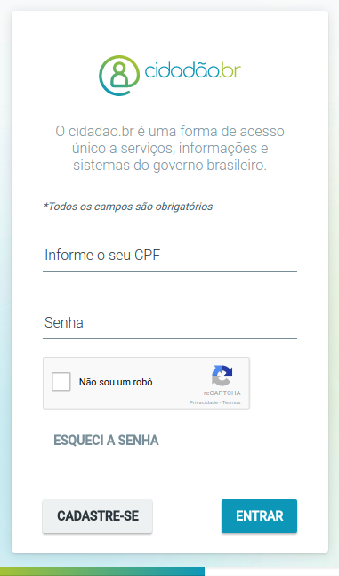
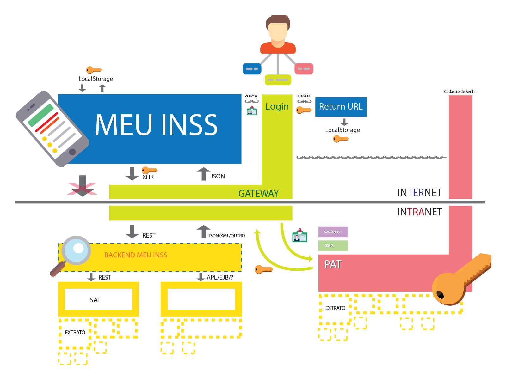
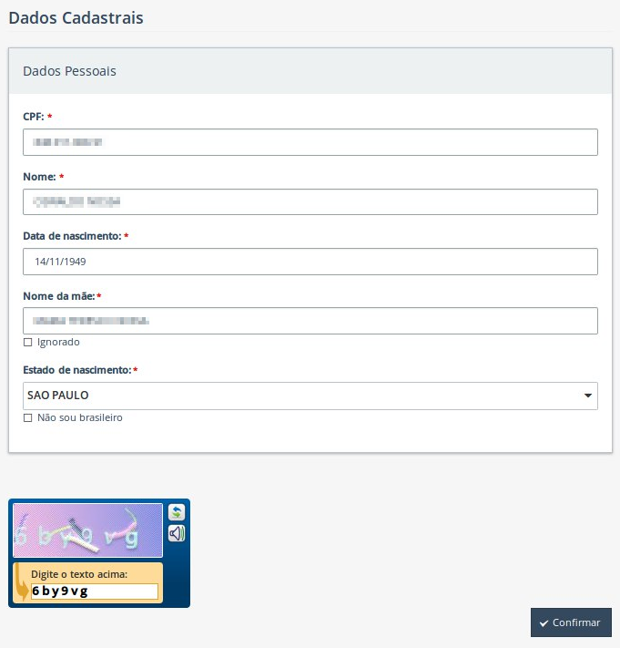
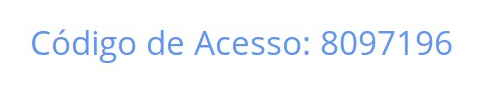
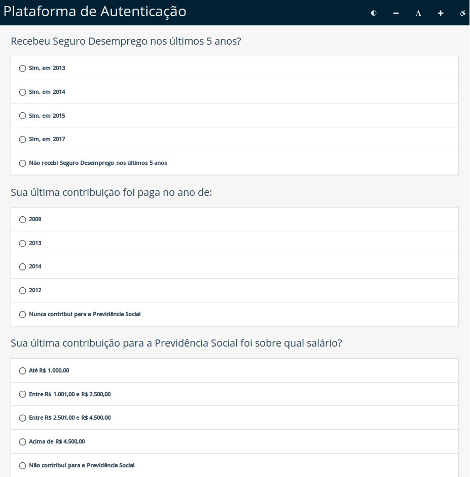
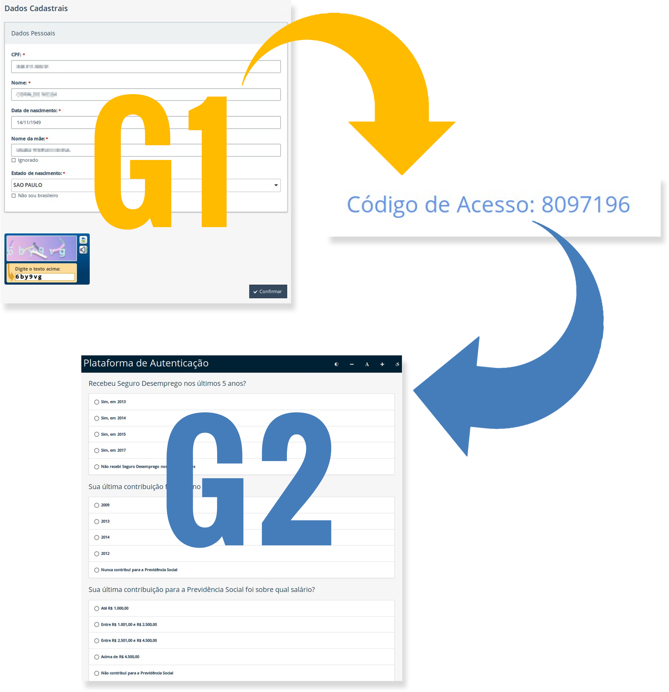
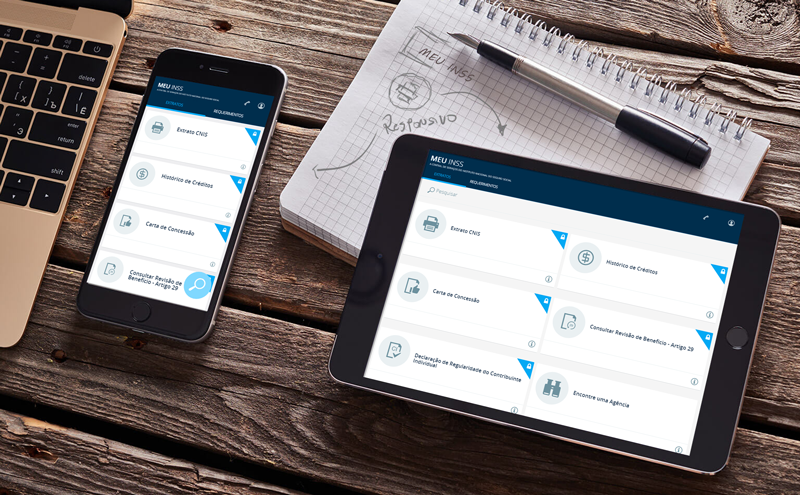
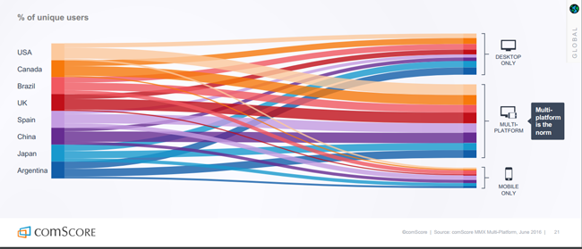

Workstation Adriano Patrick CunhaApresentação Plataforma de Autenticação - Cidadão BRMeu INSSSINE Fácil Plataforma de Autenticação


Plataforma de AutenticaçãoA plataforma de autenticação é uma solução de identificação e cadastro de senha de CidadãoCom a plataforma, a pessoa consegue ter um ponto único de autenticaçãoUma única senha para diversos aplicativos do governo
Plataforma de AutenticaçãoA Plataforma é um serviço que pode ser usado para autenticar e permitir acesso as APIs, deixando que
aplicações executem de suas especialidades
Plataforma de AutenticaçãoConcessão de AcessoPresencial - Atualmente Agências do INSSInternet (Atualmente feito em duas etapas)Plataforma de AutenticaçãoFluxo InternetPrincipal fluxo da Plataforma. É hoje feito em duas etapas.Grupo1 - Validação de Dados pessoais e primeira identificação


Grupo2 - Perguntas de KBA da vida laboral e previdênciaria


Plataforma de AutenticaçãoNíveis de AcessoSenha Forte - Acontece quando há verificação de documento de identificaçãoSenha Fraca - Não houve verificação de documentosPlataforma de AutenticaçãoAplicaçoesSATMeu INSSSINE FácilPortal Mais EmpregoEmprega BrasilPlataforma de AutenticaçãoDesenvolvimentoFramework DTP 4.0.5PrimefacesJPAWeblogic 12.1.1Oracle 12cAmbientes:
Desenvolvimento (Nuvem)HomologaçãoProduçãoMódulos: Internet, intranet, negócio, serviceGatewayDesafiosTecnologiaProficiênciaGovernançaDesenvolvimentoTomcatSpring SecurityJdk 1.7
Meu INSS
Meu INSS O
Meu INSS é uma solução multidispositivos para disponibilizar serviços do INSS para o Cidadão
Brasileiro
Assim, podemos
resolver a necessidade
do usuário onde ele estiver

Meu INSSUsando tecnologias web e responsividade, podemos entregar uma
unica aplicação em diversos dispositivos - Veja nos botões abaixo
Meu INSSUso de Navegadores no BrasilChrome - 77.75%Firefox - 6.16%Outros - 16,09%Meu INSSNão é só uma questão de Mobile vs Web - Uso de diversos dispositivos é mais comum na maioria dos países

Meu INSSDesenvolvimentoVanilhaReactJSAxiosWebPackBabelAmbientes:
Desenvolvimento (Nuvem)HomologaçãoProduçãoMeu INSSDesafiosLidar com tecnologia nova
Single Page ApplicationsLidar com técnicas novas
UXUsabilidadeDesignTecnologiaJavascriptReactJSCSSHTML5
Meu INSSServiços OferecidosExtrato CNISHistorico de CréditosCarta de ConcessãoDeclaração de Regularidade do Contribuinte IndividualConsulta Rev Art 29Encontre uma Agência
Meu INSSFuturos ServiçosAposentadoria por Idade AutomáticaLicença Maternidade AutomáticaAgendamento de Atendimento Presencial e a DistânciaEmpréstimos ConsignadosConsulta Declaração de Benefício - Consta/Nada ConstaComunicação de Resultado de Requerimento - CRERSimulador de AposentadoriaLaudo Médico
Meu INSSFuturas funcionalidadesNotificaçõesServiços Unificados ou Resumo de ClienteInterface para IdosoFuturas Futuras FuncionalidadesPerícia MédicaSine fácilFicou mais fácil e simples acessar os serviços da rede SINE